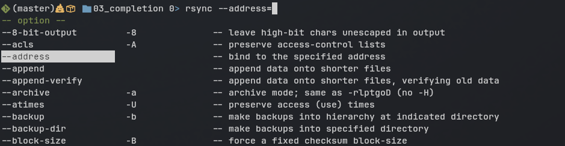

The Completion System
Overview
zsh has an advanced completion engine that can be used to autocomplete the name of a command, the path to a file, or even command arguments.

It will help you complete the name of a command and even auto-correct spelling mistakes. It will also allow you to autocomplete command arguments by showing a menu of the valid options for the current context.

Auto-Complete Engine
To enable the autocomplete engine, we have to call the compinit shell function.
autoload -U compinit && compinit
Once the completion engine is loaded, you don’t need to do anything else. zsh ships with completion support for many standard commands, and most tools you install through a package manager will install zsh completion support automatically.
There are many other projects and packages you can find that will add more completion support for other programs. You can also write your own completion rules, but you will need a different guide for that.
You may also want to enable bashcompinit the same way as you did for compinit. This will give zsh the ability to use any existing bash completion functions with the zsh completion engine.
Try it Out
Start a new zsh session, but don’t source the example file just yet:
zsh -df
Now type the (incomplete) command “sed ” (note the space at the end), and press tab. Since the completion engine has not been initialized, you will get the default shell completion, which is usually to show a simple menu with the files in the current directory.
hostname% sed <TAB>
README.md
zshrc-example.zsh
You can cycle through the options by pressing tab again, and then enter/return to select an option.
But these options don’t make any sense for the sed command, it doesn’t expect a filename as a positional argument.
Now enter the command autoload compinit && compinit and the completion engine will show a more appropriate menu for the context:
hostname% autoload compinit && compinit
hostname% sed <TAB>
# -- comment
: -- place label
= -- print current line number
D -- delete up to the first newline in the pattern space
...(truncated)
Now you will see a list of all the options that are actually appropriate for sed.
Customizing it
The completion engine uses many variables to configure it’s behavior and control how values are formatted for display.
I won’t try to explain zstyle or all of the possible options, but I’ll cover some that I think are important and/or useful to include in your own configuration.
This rule will ensure that the core completion engine is enabled, along with an extension that will try to auto-correct typos:
zstyle ':completion:*' completer _extensions _complete _approximate
This will enable caching of completion data to make future completions much faster:
zstyle ':completion:*' use-cache on
zstyle ':completion:*' cache-path "$XDG_CACHE_HOME/zsh/.zcompcache"
When you hit <TAB>, this will show a menu with all the valid options and allow fuzzy searching through the results:
zstyle ':completion:*' menu select search
This will allow grouping of various completion suggestions. For example, if you have a command that expects a file OR a directory as the next parameter, the completion menu will show you the options separated into groups for ‘files’ and ‘directories.’
zstyle ':completion:*' group-name ''
This makes the completion menu colorize entries in the same way as ls --color:
zstyle ':completion:*:default' list-colors "${(s.:.)LS_COLORS}"
With this line, the completion engine will NOT jump to the first menu entry immediately. Instead, it will let you keep typing the command to further filter the menu, and you can press <tab> once more to jump to the first menu option.
unsetopt MENU_COMPLETE
If you don’t like having to hit <tab> a second time to use the menu, change this to setopt MENU_COMPLETE instead.
Try it Out
Start a new session with zsh -df and then enable compinit, like we did in the last exercise.
autoload compinit && compinit
Try the following, and observe the autocomplete behavior and menu presentation, and we’ll see how it changes when we enable all of these options after that.
- Type
lsand press<TAB>(no trailing space because we want to complete the command name, not the arguments). - Type
lsand press<TAB>(trailing space this time, because we want to complete arguments) - Type
fidnand press<TAB>(typo of the commandfind).
Number 3 won’t do anything interesting because we haven’t enabled auto-correction yet.
Now source the example file:
source ./completion-example.zsh
Download the example file here.
Now try those three examples again, and note the differences.